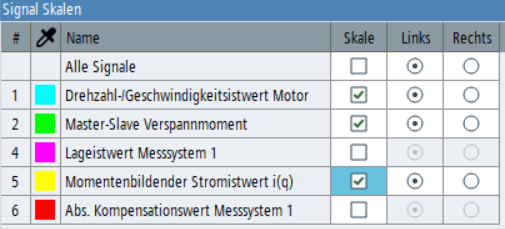

Mit dem Signalskalen-Widget können Sie die Sichtbarkeit und Position der Signalskalen im Trace-Diagramm konfigurieren. Es kann über das Kontextmenü geöffnet werden und ist andockbar.
Die Tabelle listet die Signale auf, die aktuell im Trace-Diagramm sichtbar sind. Der Inhalt wird aktualisiert, wenn sich die Sichtbarkeit der Signale ändert.
Die Kontrollkästchen für die Skalen-Sichtbarkeit sind nur relevant, wenn im Kontextmenü der Betriebsmodus "Ausgewählte Skalen" aktiv ist. In diesem Modus kann individuell konfiguriert werden, welche Skalen sichtbar sein sollen.
In den Betriebsmodi "Skalen aller Signale" und "Skala des selektierten Signals" sind die Kontrollkästchen für die Skalen-Sichtbarkeit ausgeblendet, ihr Status bleibt jedoch erhalten und wird wiederhergestellt, wenn der Modus "Ausgewählte Skalen" wieder aktiviert wird.
Die Optionsschaltflächen "Links" und "Rechts" steuern, auf welcher Seite des Trace-Diagramms die vertikale Skala dargestellt wird. Im Betriebsmodus "Ausgewählte Skalen" sind nur die Optionsschaltflächen aktiv, bei denen die Skala sichtbar ist. In den anderen beiden Modi sind immer alle Optionsschaltflächen aktiv.
Die erste Zeile der Tabelle enthält Einstellungen, die auf alle Skalen angewendet werden. Wenn Sie das Kontrollkästchen "Skale" in der ersten Zeile aktivieren, werden alle Skalen sichtbar. Wenn alle Skalen sichtbar sind, werden durch Deaktivieren des Kontrollkästchens "Skale" in der ersten Zeile alle Skalen unsichtbar. Wenn Sie die Optionsschaltfläche "Links" oder "Rechts" in der ersten Zeile auswählen, ändert sich die Position aller Skalen.
